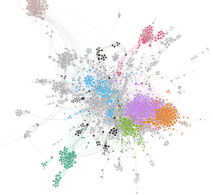
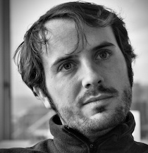

Wednesday, April 24th 2019
Location: Newman Alumni Center Executive Boardroom
9-9:30 Coffe and Breakfast
9:30am - 12:30pm - Workshop 1

In this three-hour workshop, we offer a speed introduction to a number of established approaches in digital literary studies. The case studies are taken from the universe of Harry Potter but the methodologies are generic enough to be applicable across different domains of the Humanities. We will focus on the following two applications: 1. Network analysis: Fanfiction is intriguing because of the new combinations of characters and themes it introduces. We will use network analysis (Gephi) to model these remarkable (and often radical) shifts in attention with respect to the original canons. This macro-level approach can be considered a modern form of reader response analysis. 2. Stylometry: Authorship attribution is a popular research topic in stylometry, the quantitative study of writing style. We will use "Stylometry with R" to replicate a famous case study: J.K. Rowling secretly published a novel under the male pseudonym Robert Galbraith, but Patrick Juola unmasked the author using stylometry. We will analyze how genre and literary influence are key factors in modelling an author's writing style.
The workshop will be highly hands-on and people are expected to bring their laptops on which they can install new software. Installation instructions for the software will be sent out to the participants in the weeks before the event. All data will be distributed on-site.
INSTRUCTIONS BEFORE THE WORKSHOP
The workshop will be highly hands-on and people are expected to bring their laptops on which they can install new software. Installation instructions for the software will be sent out to the participants in the weeks before the event. All data will be distributed on-site.
INSTRUCTIONS BEFORE THE WORKSHOP
Lunch
Location: Richter Library 3rd Floor Conference Room
2pm - 5pm - Workshop 2

This workshop will demonstrate the capabilities of Lexos for analyzing literatures in historical languages. Lexos is a web-based tool designed for transforming, analyzing, and visualizing texts. Lexos was created by the Lexomics Research Group (Michael Drout at Wheaton College, Scott Kleinman at Cal State Northridge, and Mark LeBlanc at Wheaton College) as an entry-level platform for Humanities scholars and students new to computational techniques while providing tools and techniques sophisticated enough for advanced research. It has been designed specifically to include rich pre-processing features for use in the study of historical languages. Lexos is an open-source web-based tool written in Python, which been under development for ten years with the support of three NEH grants and a unique model in which undergraduates serve as both researchers and software developers. The project has resulted in numerous faculty and student-authored publications (listed here). Lexos may be installed locally; however, we also maintain a live, server-based installation accessible over the internet, making it ideal for classroom use. The tool is accompanied by an embedded Scalar Book (“In the Margins”), which is designed to provide information on algorithms and best practices in computational text analysis. Although “In the Margins” is still under development, we continuously add content (and welcome external contributions) to it, which will ultimately enable users of Lexos to find relevant discussion about the analysis of historical languages embedded within the tool’s workflow.
We propose a 2-3 hour hands-on workshop, in which we will provide an overview of the available features in Lexos, with special attention to functions related to handling premodern texts (e.g. Unicode, XML and HTML entity conversion, TEI markup handling, form consolidation, and lemmatization). We will demonstrate the use of Lexos with some case studies using Old English, Middle English, and/or Latin literature. The case studies will be based on successful experiments used in the classroom or in student research projects to showcase the accessibility of Lexos for teaching early literature as well as computational stylistics. Workshop attendees will be provided with the opportunity to try out their own data sources and to discuss how the tool could be improved to better support the study of historical texts.
Thursday, April 25th 2019
9-9:30 am Coffe and Breakfast
9:30 am - 11 am Talks I
 Bio:
Mike Kestemont, PhD, is a research professor in the department of Literature at the University of Antwerp (Belgium). He specializes in computational text analysis for the Digital Humanities. Whereas his work has a strong focus on historic literature, his precious research has covered a wide range of topics in literary history, including classical, medieval, early modern and modernist texts. Together with Folgert Karsdorp and Allen Riddell he is preparing a textbook on data science for the Humanities. Mike recently took up an interest in neural networks and currently explores various applications of this exciting technology in the Arts and Humanities. Together with his Polish colleagues Maciej Eder and Jan Rybicki he is involved in the Computational Stylistics Group. Mike lives in Brussels (www.mike-kestemont.org), tweets in English (@Mike_Kestemont) and codes in Python (https://github.com/mikekestemont).
Bio:
Mike Kestemont, PhD, is a research professor in the department of Literature at the University of Antwerp (Belgium). He specializes in computational text analysis for the Digital Humanities. Whereas his work has a strong focus on historic literature, his precious research has covered a wide range of topics in literary history, including classical, medieval, early modern and modernist texts. Together with Folgert Karsdorp and Allen Riddell he is preparing a textbook on data science for the Humanities. Mike recently took up an interest in neural networks and currently explores various applications of this exciting technology in the Arts and Humanities. Together with his Polish colleagues Maciej Eder and Jan Rybicki he is involved in the Computational Stylistics Group. Mike lives in Brussels (www.mike-kestemont.org), tweets in English (@Mike_Kestemont) and codes in Python (https://github.com/mikekestemont).Abstract: Digital approaches to Humanities scholarship have become increasingly institutionalized, if not mainstream, in recent years. When looking back at some of the earlier essays in the field, however, one cannot help but notice a few promises that the digital humanities have so far failed to live up to. The naive idea that distant reading would lure scholars away from an already over-studied canon, for instance, has hardly materialized. The same goes for the slightly neo-positivistic claims that computers would make the individual scholar's work somehow "easier", data more "accessible", and scholarship more "objective". Another cause for worry is the unexpected surge of interest in historic literature -- that is free of rights -- causing a somewhat remarkable underrepresentation of contemporary criticism in DH.
In this talk, I would like to reflect on these issues, while drawing examples from the emerging domain of fanfiction studies, which is characterized by tensions that invite considerable meta-reflection on the scholar's part. The abundance of data from this domain, for example, stands in a stark contrast with the concerns about intellectual property. Likewise, an interesting tension arises between the hotly debated literary quality of fanfics and our ability to perform reader response analyses on an unprecedented scale. Finally, the challenging relationship between canon and fanon can be likened to the equally challenging interdependence between digital and non-digital literary studies.
Bio: Gimena del Rio Riande is Associate Researcher at the Instituto de Investigaciones Bibliográficas y Crítica Textual of the National Scientific and Technical Research Council (CONICET. Buenos Aires, Argentina). Her main academic interests deal with Digital Scholarly Editions and DH methodologies and tools as open and situated practices. She is, among others, the director of the Laboratorio de Humanidades Digitales at CAICYT (HD CAICYT LAB, CONICET), co-director of the first Digital Humanities journal in Spanish (Revista de Humanidades Digitales - RHD), president at Asociación Argentina de Humanidades Digitales (AAHD), PCC member of the Pelagios Commons Initiative, and co-director of the Digital Humanities Master at the Laboratorio de Innovación en Humanidades Digitales (LINHD-UNED, Spain).
Abstract: The availability of born digital data as well as digitised collections is changing the way we study and understand the humanities. This amount of information has even greater potential for research when semantic links can be established and relationships between entities highlighted. The work of Pelagios Commons has shown that connecting historical data according to their common reference to places (expressed via URIs stored in gazetteers) is a particularly powerful approach: information about material culture –data, texts and maps– can be connected and cross referenced through geodata.
Producing semantic annotations usually requires a certain amount of knowledge of digital technologies such as RDF, ontologies, NER or text encoding. These techniques can sometimes act as a barrier for users that are not already familiar with Semantic Web theory. Recogito aims to facilitate the creation and publication of Linked Open Data by dramatically reducing the need to work with formal languages directly, while at the same time allowing the user to export the annotations produced as valid RDF, XML and GeoJSON formats. The Recogito annotation tool currently has greatest support for ancient and modern sources through automatic NER in different languages, giving account of the Pelagios. First developed in 2014, Recogito has made users an active agent in shaping its functionality and interface, allignd with the community-oriented philosophy behind Pelagios Commons.
11:30 am - 1 pm Talks II
 Bio: Greta Franzini is a postdoctoral researcher at the Università Cattolica del Sacro Cuore in Milan, Italy. She received her MA and PhD in Digital Humanities at King's College London and University College London, respectively. While her studies concerned the field of Digital Scholarly Editing (notably, the Catalogue of Digital Editions), Greta’s current research interests lie in text analysis and in the application of Natural Language Processing and Computational Linguistics methods to the study of Latin. Prior to joining Università Cattolica, she contributed to the development and evaluation of TRACER, a text reuse detection machine, to detect literal quotations and paraphrase in Latin texts.
Alongside her research, Greta serves as journal editor for Umanistica Digitale and Digital Medievalist, and as a board member of the Italian Association of Digital Humanities (AIUCD).
Bio: Greta Franzini is a postdoctoral researcher at the Università Cattolica del Sacro Cuore in Milan, Italy. She received her MA and PhD in Digital Humanities at King's College London and University College London, respectively. While her studies concerned the field of Digital Scholarly Editing (notably, the Catalogue of Digital Editions), Greta’s current research interests lie in text analysis and in the application of Natural Language Processing and Computational Linguistics methods to the study of Latin. Prior to joining Università Cattolica, she contributed to the development and evaluation of TRACER, a text reuse detection machine, to detect literal quotations and paraphrase in Latin texts.
Alongside her research, Greta serves as journal editor for Umanistica Digitale and Digital Medievalist, and as a board member of the Italian Association of Digital Humanities (AIUCD).
Bio: Marco Passarotti is Associate Professor at the Università Cattolica del Sacro Cuore in Milan, Italy. His main research interests deal with building, using and disseminating linguistic resources and Natural Language Processing tools for Latin. A pupil of father Roberto Busa SJ, one of the pioneers of Humanities Computing, since 2006 Marco directs the Index Thomisticus Treebank project. In 2009, he founded the CIRCSE Research Centre of Computational Linguistics at Università Cattolica.
Currently, he is Principal Investigator of an ERC Grant (2018-2023) aimed at building a Linked Data Knowledge Base of resources and tools for Latin (LiLa). He has organized and chaired several international scientific events. He co-chairs the series of workshops on 'Corpus-based Research in the Humanities' (CRH). He teaches Computational Linguistics at Università Cattolica (Milan) and at the University of Pavia.
Abstract: The LiLa: Linking Latin project was recently awarded funding from the European Research Council (ERC) to build a Knowledge Base of linguistic resources for Latin. LiLa responds to the growing need in the fields of Computational Linguistics, Humanities Computing and Classics to create an interoperable ecosystem of resources and Natural Language Processing (NLP) tools for Latin. To this end, LiLa makes use of Linked Open Data (LOD) practices and standards to connect words to distributed textual and lexical resources via unique identifiers. In so doing, LiLa builds rich knowledge graphs, which can be used for research and teaching purposes alike.
The talk will detail the current state of LiLa and shed light on common misconceptions about Latin being an under-resourced language.
 Bio: Dennis Yi Tenen is associate professor of English and Comparative Literature at Columbia University. His teaching and research happen at the intersection of people, texts, and technologies. Tenen received his doctorate in Comparative Literature at Harvard University under the advisement of Professors Elaine Scarry and William Todd. A co-founder of Columbia’s Group for Experimental Methods in the Humanities, he is the author of Plain Text: The Poetics of Computation (Stanford University Press, 2017). His recent work appears on the pages of New Literary History, Amodern, boundary2, Computational Culture, and Modernism/modernity on topics that include literary theory, the sociology of literature, media history, and computational narratology. His next book concerns the creative limits of artificial intelligence.
Bio: Dennis Yi Tenen is associate professor of English and Comparative Literature at Columbia University. His teaching and research happen at the intersection of people, texts, and technologies. Tenen received his doctorate in Comparative Literature at Harvard University under the advisement of Professors Elaine Scarry and William Todd. A co-founder of Columbia’s Group for Experimental Methods in the Humanities, he is the author of Plain Text: The Poetics of Computation (Stanford University Press, 2017). His recent work appears on the pages of New Literary History, Amodern, boundary2, Computational Culture, and Modernism/modernity on topics that include literary theory, the sociology of literature, media history, and computational narratology. His next book concerns the creative limits of artificial intelligence.
Abstract: The emerging paradigm of minimal computing stands in stark contrast to blunt instrumental thinking which privileges high resolution, high performance, resource-intensive vision of the digital humanities. Minimal computing builds on the foundations of plain text to imagine reading, writing, and research practices that accord to the values of the humanities: accessibility, sustainability, and critical transparency.
Lunch
2pm - 3:30pm Talks III
 Bio:
Francisco Gago-Jover is Professor of Spanish at the College of the Holy Cross. He received his Ph.D. in Hispano Romance Linguistics and Philology at the University of Wisconsin-Madison in 1997 with a dissertation on Medieval Spanish military lexicography. He is the author of two dictionaries, an edition of the Spanish version of the Art of Dying Well, numerous articles on lexicography, and several paleographical transcriptions of medieval Spanish texts. He has taught doctorate courses in different universities in the United States (University of Massachusetts-Amherst and Boston University) and Spain (Universidad de León, Universidad de Valladolid, and Universitat de les Illes Balears). He is the Director of Digital Projects at the Hispanic Seminary of Medieval Studies and is in charge of the Digital Library of the Old Spanish Texts and the Old Spanish Textual Archive.
Bio:
Francisco Gago-Jover is Professor of Spanish at the College of the Holy Cross. He received his Ph.D. in Hispano Romance Linguistics and Philology at the University of Wisconsin-Madison in 1997 with a dissertation on Medieval Spanish military lexicography. He is the author of two dictionaries, an edition of the Spanish version of the Art of Dying Well, numerous articles on lexicography, and several paleographical transcriptions of medieval Spanish texts. He has taught doctorate courses in different universities in the United States (University of Massachusetts-Amherst and Boston University) and Spain (Universidad de León, Universidad de Valladolid, and Universitat de les Illes Balears). He is the Director of Digital Projects at the Hispanic Seminary of Medieval Studies and is in charge of the Digital Library of the Old Spanish Texts and the Old Spanish Textual Archive.Abstract:The creation of digital collections of texts, or textual corpora, for research and preservation may be one of the seminal technological innovations in the digital humanities that still remains at the core of many text-oriented disciplines, including those belonging to medieval studies. When creating a textual corpus, digital humanists face many key choices that will determine their project’s success. These decisions include the selection of standards, format types, methods for text recollection, searchability, access, lemmatization, and interoperability, among others. In this talk I will discuss the development of the Old Spanish Textual Archive (OSTA), a morphologically tagged and lemmatized corpus of more than 25 million words, based on the more than 400 semi-paleographic transcriptions of medieval texts written in Castilian, Asturian, Leonese, Navarro-Aragonese and Aragonese prepared by the collaborators of the Hispanic Seminary of Medieval Studies (HSMS).
 Bio: I am a PhD candidate in the Classics Department at UB, and a former Adjunct Instructor of Humanities at Miami-Dade College. I study idea transmission in the ancient world, specifically the allusions found in epic poetry. My approach combines philology with computational linguistics and cognitive science
Bio: I am a PhD candidate in the Classics Department at UB, and a former Adjunct Instructor of Humanities at Miami-Dade College. I study idea transmission in the ancient world, specifically the allusions found in epic poetry. My approach combines philology with computational linguistics and cognitive science
Abstract: The lemmatization task, wherein a computer model must group together inflected forms derived from the same stem, or 'lemma,' is a fundamental problem in language modeling. Software that handles more complex humanistic tasks like authorship attribution or intertextuality detection relies on lemmatization as an early step.
In classical languages, the current standard depends on training sophisticated models with supervised data sets (Burns, 2018). These data sets include correct lemmatization tagged by expert readers, a labor intensive task. Modern languages can avoid generating supervised training data by applying machine learning to much larger data sets. Moon and Erk (2008), for example, used an aligned corpus of English and German to infer lemmatization schemes without recourse to hand-tagged training data. Underserved languages do not feature very large aligned corpora, and may not have access to a database of expert annotation for training new models.
This paper presents a technique for inferring a lemmatization model for an underserved language without training data beyond a plaintext corpus and a chart of the inflected forms of its lexicon. Tested on the classical Latin, the performance of this unsupervised model is on par with more sophisticated models requiring parsed training data or large aligned corpora.
4 pm - 5:30 pm Talks IV
 Bio: Scott Kleinman works on medieval language and literature from the Anglo-Saxon period to the fourteenth century with a special emphasis on the regional and cultural diversity of medieval England. in historiographical and romance literature. His publications include studies of legal discourse in Laȝamon’s Brut, the relationship between romance and historiography in Havelok the Dane, the dialectal distribution of the Old English word for “iron”, service cultures in The Lord of the Rings, and topic modelling of Classical Chinese literature. His Digital Humanities work includes the NEH-Funded Lexomics Project, which studies literature using digital methods and produces the computational text analysis tool Lexos. He is also co-Director of the Archive of Early Middle English project, which produces digital editions of English manuscripts written between the eleventh and fourteenth centuries and of the 4Humanities WhatEvery1Says Project, which text mines public discourse in order to produce tools for Humanities advocacy. In the past, he worked as a designer/developer for the online search tool Serendip-o-matic as part of the One Week | One Tool project.
Bio: Scott Kleinman works on medieval language and literature from the Anglo-Saxon period to the fourteenth century with a special emphasis on the regional and cultural diversity of medieval England. in historiographical and romance literature. His publications include studies of legal discourse in Laȝamon’s Brut, the relationship between romance and historiography in Havelok the Dane, the dialectal distribution of the Old English word for “iron”, service cultures in The Lord of the Rings, and topic modelling of Classical Chinese literature. His Digital Humanities work includes the NEH-Funded Lexomics Project, which studies literature using digital methods and produces the computational text analysis tool Lexos. He is also co-Director of the Archive of Early Middle English project, which produces digital editions of English manuscripts written between the eleventh and fourteenth centuries and of the 4Humanities WhatEvery1Says Project, which text mines public discourse in order to produce tools for Humanities advocacy. In the past, he worked as a designer/developer for the online search tool Serendip-o-matic as part of the One Week | One Tool project.
Abstract: Middle English may present the trickiest of challenges for automated lemmatisation. With a relatively small corpus of texts, and an even smaller corpus of edited ones, Middle English is not well-suited to machine-learning approaches that rely on scale. Because the corpus is spread amongst dialectal and chronological sub-groups (sometimes single texts) with vastly different grammatical and orthographic features, each group effectively forms its own, even smaller corpus. What is effectively needed is a way for the machine to learn across these sub-corpora. We have a common reference point in the Middle English Dictionary with a pre-defined set of headwords available for use as lemmas. Using the MED has the advantage of potentially providing users with access to the wider semantic and literary contexts of terms in a specific text. In this paper, I will cover some methods I have used to try to match the vocabulary of Middle English texts to MED headwords. These methods include both unsupervised methods of grouping related word types using edit distance metrics, topic models, and word embedding to supervised methods with student research assistants. I will examine some of the problems associated with using the MED, as well as existing corpora containing linguistic markup. Finally, I will examine the promising approach of reinforced machine learning and suggest some ways in which we might pursue this approach through multi-institution collaborations in the future.

Bio: I am currently a PhD student at the University of Antwerp working on
a project in Computational Linguistics. Formally, I am associated with CLiPS and
the Antwerp Centre for Digital Humanities and Literary Criticism. I work on the
fields of Natural Language Processing and Information Retrieval, focusing on
tasks such as morphosyntactic tagging, Stylometry or Text Reuse Detection with
applications to historical languages, examining the suitability of Recurrent
Neural Network models for such tasks. Besides, I am also interested in the field
of Language Generation, where I have focused on text generation with literary
and artistic purposes.
Abstract: In the present talk, we will discuss recent approaches to
lemmatization based on Neural Network architectures that cast lemmatization as a
string transduction task. We will illustrate the approach through a comparison
to other data-driven paradigms that make use of contextual information in the
form of morphological tags to help solving token-lemma ambiguities. In
particular, we will consider a number of Historical Languages and show the
effect of the charateristic high degree of orthographic variation on the
different approaches to lemmatization. Furthermore, we will discuss and analyze
how Neural Network approaches are better suited to counteract such effects.
Finally, we will discuss further extensions to the Neural Network approach that
lead to further improvements in model fit.
5:30 pm - 6pm Closing and Discussion